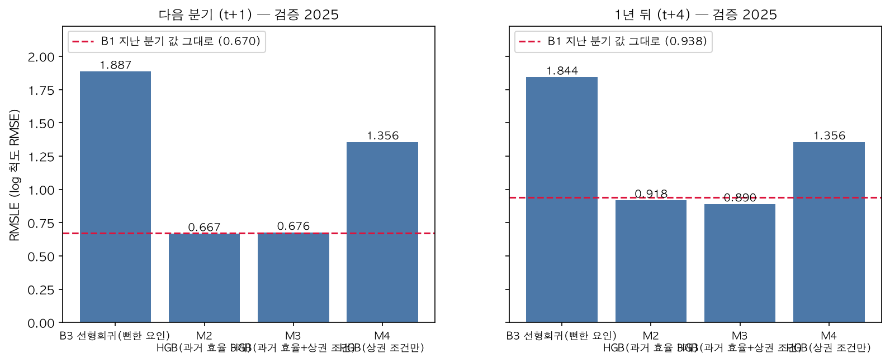
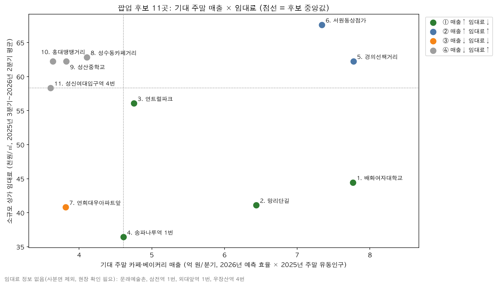
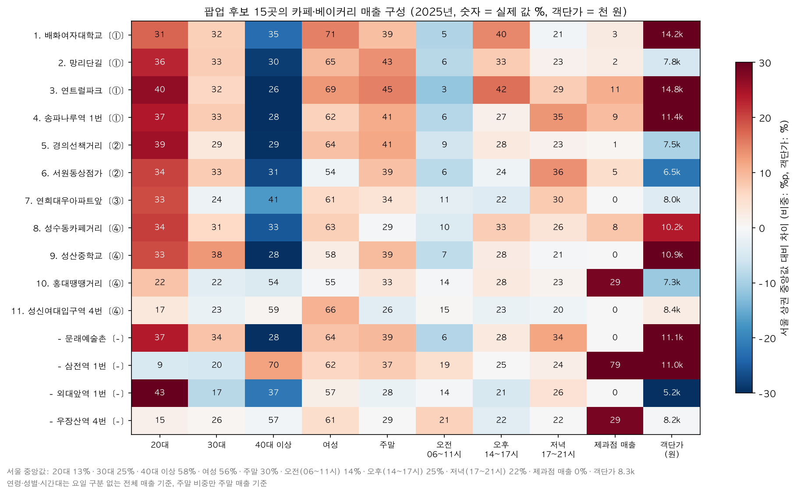
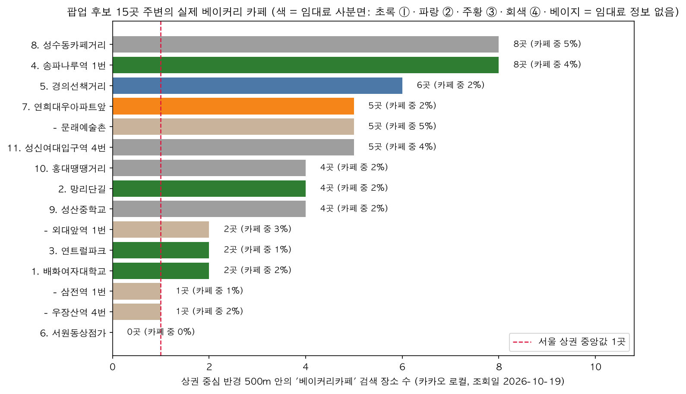
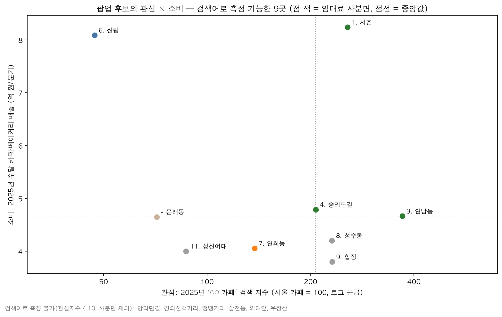
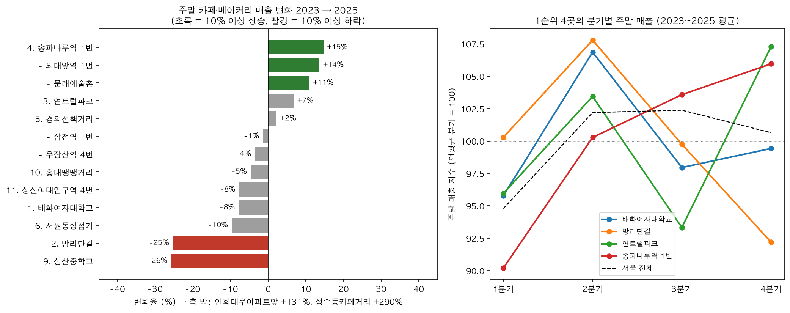

인사이트 리포트
주제 주말 베이커리 카페 팝업스토어 어디에 열까? — 주말 유동인구 대비 카페·베이커리 매출 × 임대료로 고른 후보 상권
작성 이지민 · ABA3 1차 프로젝트 (유통) · 2026-10-22
대시보드 https://zmnl-debug.github.io/weekend-bakery-popup/
읽는 사람 다음 시즌 주말 팝업 상권을 정하는 베이커리 카페 브랜드 마케터
근거 숫자의 계산 기준은
references/metric_definitions.md, 분석 과정은reports/EDA_report.md·reports/modeling_report.md에 있다. 모든 결과는 상권 단위 상관관계이며 인과가 아니다. '제안'으로 표시한 문장은 데이터에서 출발한 해석이다.
한 줄 결론
사람이 많은 큰 상권보다, 같은 조건의 상권보다 카페가 잘 팔리고 임대료가 낮은 카페 골목 — 서촌(배화여대 일대)·망리단길·연남·송리단길 — 을 주말 팝업 1순위 후보로 제안한다. 실행 순서는 비용 부담이 가장 낮은 서촌(2분기) → 유일하게 성장 중인 송리단길(4분기) → 연남(4분기)이며, 망리단길은 2년 새 주말 매출이 25% 줄었지만 검색 관심은 늘어(+42%, 망원동) 가게가 늘며 손님을 나눠 갖는 상권이라, 차별화 메뉴로 짧게 테스트한다(인사이트 7).
인사이트 1. 사람이 많이 지나간다고 카페가 잘 팔리는 곳은 아니다

- 주말 유동인구와 주말 카페·베이커리 매출의 상관은 0.24(스피어만)로 약하다.
- 2025년 골목상권 중 1년간 주말 유동인구가 비슷한 마포FM(86만 명)과 수락산디자인거리(95만 명)의 1년간 주말 카페·베이커리 매출은 0.06억 vs 6.18억 원, 약 100배 차이다(2025년 4개 분기 합계).
- 의미: "유동인구 = 좋은 팝업 입지"라는 통념만으로 고르면 비용만 크고 매출로 이어지지 않는 상권을 고를 수 있다. 마케터가 후보를 비교할 때는 지나가는 사람 1천 명당 카페 매출(효율)을 함께 보는 것을 제안한다.
인사이트 2. 다음 분기는 '지난 분기 그대로', 1년 뒤는 '상권 조건'이 갈린다

- 다음 분기 효율은 지난 분기 값 그대로(RMSLE 0.670)를 어떤 모델도 의미 있게 이기지 못했다 → 효율은 분기 사이에 거의 변하지 않는다.
- 1년 뒤를 예측할 때는 상권 조건을 더한 모델이 RMSLE를 5.2% 줄였다(0.939 → 0.890). 단 평균 오차(MAE)는 더 크고, 순서(상위 15곳 적중률 90%)는 작년 값 그대로와 같았다 → 후보를 가른 것은 모델보다 '같은 조건 대비 배수'와 임대료다.
- 의미 (제안): 바로 다음 시즌 팝업이라면 마케터는 '최근 실적이 좋은 상권'을 보면 충분하다. 1년 단위로 매장·팝업 로드맵을 짤 때는 카페가 모여 있는지, 직장인구가 있는지 같은 상권 조건도 함께 본다.
인사이트 3. 카페가 모인 골목일수록 점포당 매출도 높았다 — 잠식보다 집적에 가깝다

- 같은 유형·같은 유동인구 수준의 상권끼리 비교하면, 카페·베이커리 점포가 많은 구간의 점포당 주말 매출이 1.9배(스피어만 0.26, EDA 가설 3).
- 1년 뒤 예측 모델에서도 다른 조건이 같을 때 점포 수가 많은(5 → 54개) 상권의 예측 효율이 +25.3% 높다(두 분석 방법의 방향 일치).
- 의미 (제안): 경쟁 카페가 많은 골목을 피하기보다, 카페 목적의 방문객이 이미 모이는 '카페 거리'에 들어가는 편이 팝업에 유리할 수 있다. 상관관계이며, '카페를 더 모으면 매출이 오른다'는 인과나 점포 하나의 성과를 뜻하지 않는다.
인사이트 4. 효율이 높아도 비싼 곳이 있다 — 비용까지 보면 순위가 바뀐다

- 효율 순으로만 고르면 상위 15곳이 모두 발달상권·관광특구(잠실역·명동 등)라, 누구나 아는 답이 된다. 그래서 '같은 조건 상권 대비 효율이 몇 배인가'로 후보 15곳을 고르고(골목 14·전통시장 1), 한국부동산원 임대료를 붙였다.
- 성수동카페거리·홍대 일대는 같은 조건 대비 효율이 높지만 임대료(62~63천원/㎡)가 후보 중앙값(58.3)보다 높고 기대 매출은 중앙값보다 낮아 ④칸으로 밀렸다.
- 기대 매출이 높고 임대료가 낮은 ①칸: 서촌 배화여대(7.8억/분기, 44.5천원/㎡) · 망리단길(6.4억, 41.1) · 연남(4.8억, 56.1) · 송리단길(4.6억, 36.4). 단 송리단길은 기대 매출이 후보 중앙값(4.61억)과 같아 경계에 걸쳐 있다.
- 후보는 한 해만 튄 상권이 아니다: 15곳의 연도별 주말 효율 백분위(각 연도 서울 상권 중)는 2021~2025년 내내 57~94였다.
- 의미: '요즘 뜨는 카페 상권'(성수·홍대)이 팝업 비용 대비 최선은 아닐 수 있다. 비슷한 고객층(인사이트 5)을 더 낮은 임대료로 만날 수 있는 골목이 있다.
인사이트 5. 1순위 4곳의 손님은 20~30대 여성, 주말 — 그러나 사는 방식이 둘로 나뉜다

| 지표 (2025년 카페·베이커리 매출) | 서촌 배화여대 | 연남 | 망리단길 | 송리단길 | 서울 상권 중앙값 |
|---|---|---|---|---|---|
| 20대 비중 | 31% | 40% | 36% | 37% | 13.5% |
| 30대 비중 | 32% | 32% | 33% | 33% | 25.4% |
| 여성 비중 | 71% | 69% | 65% | 62% | 55.6% |
| 주말 비중 | 39% | 45% | 43% | 41% | 29.7% |
| 오후(14~17시) 비중 | 40% | 42% | 33% | 27% | 25.5% |
| 저녁(17~21시) 비중 | 21% | 29% | 23% | 35% | 21.8% |
| 객단가 | 1.42만 원 | 1.48만 원 | 0.78만 원 | 1.14만 원 (서울보다는 높음) | 0.83만 원 |
| 주말 유동인구 (분기 평균) | 34만 명 | 32만 명 | 152만 명 | 71만 명 | 21.7만 명 |
| 주말 1천 명당 매출 (2026 예측) | 230만 원 | 147만 원 | 42만 원 | 65만 원 | — |
연령·성별·시간대는 요일 구분 없는 매출 기준, 주말 비중만 주말 매출 기준. 서울 중앙값은 2025년 카페·베이커리 매출이 있는 상권 1,107곳 기준(주말 유동인구는 4개 분기가 모두 있는 1,050곳 기준, 값은 같음).
- 네 곳 모두 서울 상권보다 20대·30대·여성·주말 비중이 높다 → 이 상권에서 주말 팝업의 주 고객은 20~30대 여성일 가능성이 크다(상권 매출 구성이며 개별 고객 정보가 아님).
- 그런데 매출을 만드는 방식은 둘로 갈린다.
- 머무는 골목 (서촌 배화여대·연남): 지나가는 사람은 후보 4곳 중 적지만(32~34만 명, 서울 중앙값보다는 많음) 1천 명당 매출이 높고, 오후 비중이 40%대, 객단가가 1.4만 원대 → 머물면서 여러 개를 사는 손님이 많은 것으로 보인다.
- 지나가는 골목 (망리단길·송리단길): 사람은 많지만(71~152만 명) 1천 명당 매출은 낮고 오후 비중도 낮다(27~33%). 망리단길은 객단가가 낮고(0.78만 원), 송리단길은 객단가는 서울보다 높지만 저녁 비중이 높다(35%) → 지나가다 사는 손님 비중이 큰 것으로 보인다. 두 곳의 성격은 서로 다르다(망리단길 = 가벼운 구매, 송리단길 = 저녁 수요).
- 후보는 이미 효율이 높은 상권으로 고른 집단이라, 서울 전체와의 차이에는 선택 효과가 섞여 있다.
인사이트 6. 실제 지도와 검색으로 보면 — 1순위 중 서촌은 빵집 경쟁이 덜하고 검색 관심 비중이 커지고 있다
서울시 데이터에는 '베이커리 카페' 업종이 따로 없어, 두 가지 외부 데이터로 1순위 상권을 다시 봤다(순위는 바꾸지 않음).
① 대리 지표 검증 (카카오 로컬, 상권 중심 반경 500m, 서울 상권 1,107곳)
- 카카오 로컬 기준 상권 중심 반경 500m의 장소 수와 서울시 점포 수의 스피어만 상관은 카페 0.48, 베이커리 0.39로 방향이 같아, 서울시 점포 수가 업종이 모인 정도의 상대적 순서를 대략 반영한다.
- 그러나 '베이커리카페'로 검색되는 장소 수(상권당 중앙값 1곳)는 제과점 점포 수와 0.23으로 상관이 약하다 → 대리 지표를 '베이커리 카페' 점포 수의 정확한 대용으로 보지 않고, 후보 주변 실제 현황은 카카오 검색 결과(그림 18)로 따로 제시한다.

② 관심(네이버 데이터랩 '○○ 카페' 검색, 서울 카페 = 100, 2025년 평균) — 처음 조회에서 측정되지 않은 곳 중 망리단길은 망원동, 경의선책거리·땡땡거리는 홍대로 다시 조회했다(10/22, 생활권 이름이라 상권보다 넓음). 삼전동·외대앞·우장산 3곳은 여전히 측정 불가. 변화율은 '서울 카페' 검색 대비 비중의 변화다.

| 1순위 상권 | 반경 500m 베이커리카페 | 반경 500m 베이커리 | 검색 관심 (2023→2025) | 읽기 |
|---|---|---|---|---|
| 서촌 배화여대 | 2곳 | 20곳 | 256 (+95%) | 1순위 4곳 중 빵집이 가장 적음(서울 중앙값보다는 많음), 서울 카페 대비 관심 비중이 2년 새 약 2배 |
| 연남 | 2곳 | 65곳 | 370 (+6%) | 관심이 가장 높지만 빵집이 매우 많음 → 차별화 필요 |
| 송리단길 | 8곳 (서울 상위 2%) | 29곳 | 207 (+32%) | 이미 '베이커리 카페 거리' → 집적 효과와 경쟁이 함께 |
| 망리단길 | 4곳 | 67곳 | 232 (+42%, '망원동'으로 재조회) | 빵집이 매우 많고, 관심은 늘었는데 매출은 줄었다(인사이트 7) |
서울 상권 중앙값(반경 500m): 베이커리카페 1곳, 베이커리 13곳, 카페 64곳. 조회일 2026-10-19.
- 성수동·합정은 검색 관심이 서울 카페의 2배 이상(231)으로 높지만 2025년 주말 카페 매출은 후보 중에서 낮은 편(3.8~4.2억)이고 임대료도 높다(④칸) → 화제성이 곧 팝업 효율은 아니다(인사이트 4와 같은 방향). 관심 중앙값이 이 두 곳·망원동 근처(약 231)에 몰려 있어 사분면 칸 이름보다 값으로 읽는다.
- 의미 (제안): 같은 1순위라도 서촌은 '네 곳 중 빵집 경쟁은 덜하고 관심은 오르는 곳', 연남·망원은 '빵집이 많아 차별화가 필요한 곳', 송리단길은 '베이커리 카페가 모인 거리'로 접근이 달라야 한다.
- 한계: 키워드 검색이라 이름·분류 기준이고, 반경 500m는 상권 경계와 다르다. 검색어는 상권보다 넓은 지역명이며 검색 ≠ 방문이다. 장소·검색 데이터는 2026년 조회 기준이고 매출은 2025년 기준이다.
인사이트 7. 실무로 옮기면 — 언제, 얼마를 걸고, 무엇을 목표로

① 1순위라도 망리단길은 '꺾이는 상권'이다 — 다만 관심이 식은 게 아니라 나눠 먹는 중
- 2023 → 2025년 주말 카페·베이커리 매출 −25%, 같은 기간 점포는 154 → 162개로 늘어 점포당 주말 매출은 −29%.
- 그런데 '망원동 카페' 검색 관심(서울 카페 대비)은 같은 기간 +42%였다. 사람들의 관심은 늘었는데 카드 매출은 줄고 가게는 늘었다 → 상권이 식었다기보다 늘어난 가게들이 손님을 나눠 갖고 있을 가능성이 크다(해석. 검색어 '망원동'은 망원시장 등 상권보다 넓은 범위를 포함).
- 실무적으로는 '피할 곳'보다 차별화 없이 들어가면 묻히는 곳에 가깝다. 단기 테스트로 반응을 보되, 이미 많은 빵집(반경 500m 67곳)과 겹치지 않는 메뉴로 들어가야 한다.
- 1년 뒤 모델은 2026년을 +3%로 예측했지만 최근 추세와 반대다. 모델은 순위 선별용이라, 후보를 고른 뒤 최근 2년 추세를 따로 확인하는 단계가 필요하다.
- 반대로 송리단길은 1순위 중 유일하게 성장(주말 매출 +15%, 점포당 +12%, 검색 관심 비중 +32%)하고 있다. 성수동 카페거리(+290%)는 가장 빠르게 크지만 임대료·필요 점유율이 높다(④칸).
② 비용을 회수하려면 상권 주말 매출의 몇 %를 가져와야 하나 (월 임대료 × 33㎡ ÷ 월 주말 카페·베이커리 매출, 임대료만 반영한 최소치)
| 상권 | 월 임대료(33㎡) | 필요 점유율 (임대료 그대로) | 필요 점유율 (대관료 = 임대료 × 3) | 주말 하루 필요 고객 (× 3) |
|---|---|---|---|---|
| 서촌 배화여대 | 147만 원 | 0.57% | 1.70% | 36명 |
| 망리단길 | 136만 원 | 0.63% | 1.90% | 60명 |
| 송리단길 | 120만 원 | 0.78% | 2.35% | 36명 |
| 연남 | 185만 원 | 1.17% | 3.50% | 43명 |
| 경의선책거리 (대안) | 205만 원 | 0.79% | 2.38% | 95명 |
| 성수동 카페거리 (④칸) | 207만 원 | 1.51% | 4.54% | 70명 |
주말 하루 필요 고객 = 월 비용 ÷ 한 달 주말 8.7일 ÷ 상권 객단가. 원재료·인건비는 빠진 최소치라 절대값보다 후보 간 비교로 읽는다.
- 서촌은 가져와야 할 몫이 가장 작고(객단가가 높아 하루 36명이면 됨), 망리단길·경의선책거리는 객단가가 낮아 같은 비용에 더 많은 손님이 필요하다.
③ 언제 열까 (분기별 주말 매출 지수, 2023~2025 평균, 상권 평균 분기 = 100)
- 서울 전체로 1분기가 가장 약하다(94.8) → 1분기 오픈은 피한다.
- 서촌 2분기 107(봄), 송리단길 4분기 106·1분기 90, 연남 4분기 107·3분기 93 → 상권마다 강한 시즌이 다르다.
- 토요일 매출 비중은 후보 대부분 51~57%로 서울(54%)과 비슷하다. 일요일도 매출의 절반 가까이를 차지하므로 이틀 모두 운영하고, 1천 명당 매출이 6~19% 높은 토요일에 인력·재고를 더 둔다.
의미 (제안): 한 시즌에 한 곳씩 '비용이 낮고 시즌이 맞는 곳'부터 연다 — 2분기 서촌 → 4분기 송리단길·연남. 망리단길은 매출은 줄고 관심은 늘어난 '경쟁 과열' 상권이라 차별화 메뉴로 1~2주 테스트해 반응을 본 뒤 확대 여부를 정한다. 각 팝업의 주말 하루 목표 고객 수(위 표)를 KPI로 두면 '얼마나 팔아야 성공인가'를 미리 정할 수 있다.
실행 제안 — 상권별 팝업 운영안 (제안)
| 상권 | 유형 | 목표 | 운영 시간 | 상품·경험 | 근거 |
|---|---|---|---|---|---|
| 서촌 배화여대 일대 | 머무는 골목 · 1번째(2분기) | 객단가·브랜드 경험, KPI 주말 하루 36명+ | 오후 중심 (13~18시) | 디저트 페어링·선물 세트 등 객단가 높은 구성, 앉아서 머무는 공간. 1순위 4곳 중 주변 빵집이 가장 적어(반경 500m 20곳) 베이커리 콘셉트가 눈에 띄기 쉬움(가설) | 오후 40%, 객단가 1.42만 원, 여성 71%, 임대료 44.5, 서울 카페 대비 검색 관심 2년 새 +95% |
| 연남 | 머무는 골목 · 4분기 | 20대 신규 고객·SNS 확산, KPI 43명+ | 오후~초저녁 (13~19시) | 한정 빵·포토존 등 공유하고 싶은 경험. 반경 500m 빵집 65곳(서울 중앙값 13)·제과점 매출 비중 11%로 베이커리 경쟁이 많아 차별화 메뉴 필요 | 20대 40%, 주말 45%, 객단가 1.48만 원, 검색 관심 후보 최고(370) |
| 망리단길 | 지나가는 골목 · 단기 테스트 | 인지도·시식, 매출 −25%·점포당 −29%지만 관심 +42% → 기존 빵집(67곳)과 겹치지 않는 메뉴로 1~2주 반응 확인 후 확대 | 주말 낮 전체 | 테이크아웃 단품·시식으로 많이 노출, 쿠폰·앱 가입 등 다음 방문 연결 | 주말 유동 152만 명(분기 평균), 주말 43%, 객단가 0.78만 원, 임대료 41.1(①칸 중 두 번째로 낮음) |
| 송리단길 | 지나가는 골목 · 2번째(4분기) | 저녁 수요 공략, 성장 상권 선점, KPI 36명+ | 오후~저녁 (15~21시) | 저녁 디저트·빵 테이크아웃. 베이커리 카페 8곳이 모인 거리라 '빵 투어' 동선에 들어가는 구성 | 저녁 35%, 임대료 36.4(후보 최저), 반경 500m 베이커리카페 8곳 |
두 번째 선택지: 경의선책거리(②, 기대 매출 7.8억으로 최고 수준이나 임대료 62.2)는 예산이 충분할 때. 임대료 정보가 없는 문래예술촌·삼전역·외대앞역·우장산역은 현장 시세 확인 후 다시 비교한다.
마케터가 반복해서 쓰는 방법
1. 분기 데이터가 나오면 '같은 조건 대비 배수'로 후보를 뽑는다. 모델을 다시 학습하지 않고 '작년 효율 ÷ 같은 조건 기대 효율'로 계산해도 상위 15곳 적중률이 같았다(모델링 보고서 3-1).
2. 후보에 임대료를 붙여 기대 매출 × 임대료 사분면으로 순위를 정한다.
3. 최근 2년 주말 매출·점포당 매출 추세를 확인해 하락 상권은 단기 테스트로 낮춘다(모델이 최근 하락을 놓칠 수 있음).
4. 1순위 칸 상권의 고객 구성(연령·시간대·객단가)을 보고 '머무는 골목'인지 '지나가는 골목'인지에 맞춰 운영안을 고르고, 강한 분기에 맞춰 시기를 정한다.
5. 비용 ÷ 객단가로 주말 하루 목표 고객 수를 KPI로 정하고, 운영 후 실제 매출로 이 순서를 검증한다.
한계와 다음 단계
- 상관관계·상권 단위 결과다. 팝업을 열면 이만큼 팔린다는 예측이 아니며, 실제 성과는 브랜드·상품·운영에 따라 다르다.
- 매출은 카드 결제 기반 추정·명목 금액이고, 연령·시간대 매출에는 요일 구분이 없다.
- 임대료는 부동산원 상권(후보보다 넓음)의 소규모 상가 평균이며 팝업 대관료가 아니다.
- 기대 주말 매출은 '1년 뒤에도 유동인구가 2025년과 같다'는 가정을 깔고 있고, 예측 모델의 평균 오차는 기준선보다 크다(순위 선별 용도).
- 사분면 경계는 후보 중앙값이라 경계 근처 상권(송리단길)은 값이 조금만 달라도 칸이 바뀐다.
- 필요 점유율·하루 고객 수는 임대료만 반영하고 33㎡·한 달 주말 8.7일을 가정한 최소치이며, 실제 팝업 대관료는 장기 임대료보다 비쌀 수 있어 배수(× 3)로 민감도를 함께 봤다.
- '머무는 / 지나가는 골목' 구분은 효율·객단가·시간대 숫자에서 나온 해석이다. 현장 관찰로 확인이 필요하다.
- 외부 데이터(카카오 장소, 네이버 검색)는 키워드 기준·조회 시점(2026) 기준이라 매출(2025)과 시점이 다르다. 대리 지표 검증 상관은 중간 정도(0.39~0.48)다.
- 다음 단계: 삼전동·외대앞·우장산은 여전히 검색으로 측정되지 않아 현장 확인 / 팝업 운영 후 실제 매출로 이 순위를 검증.
데이터 출처
- 서울열린데이터광장 「서울시 상권분석서비스」 (서울특별시) — https://data.seoul.go.kr/dataList/3/literacyView.do
- 한국부동산원 「상업용부동산 임대동향조사」 지역별 임대료(소규모 상가) (공공데이터포털) — https://www.data.go.kr/data/15069766/fileData.do
- 카카오 로컬 API 키워드 장소 검색 (2026-10-19 조회) — https://developers.kakao.com
- 네이버 데이터랩 검색어트렌드 (2026-10-19 조회) — https://datalab.naver.com
부록 A. 지표·점수 계산식
다른 사람이 같은 자료로 다시 계산할 수 있도록, 결과에 쓴 지표를 모두 적는다. 컬럼 단위 정의는 references/metric_definitions.md, 코드는 괄호 안 노트북에 있다.
| 지표 | 계산식 | 쓰는 자료 |
|---|---|---|
| 효율 (핵심 지표) | 주말 카페·베이커리 매출 ÷ (토·일 유동인구 ÷ 1,000) | 서울시 추정매출(커피-음료 + 제과점 주말_매출_금액), 길단위인구(토·일 유동인구). 상권 × 분기 (1.2) |
| 1년 뒤 예측 효율 | HGB(과거 효율 3개 + 상권 조건 11개) → log 효율 예측 | 위 효율 + 상권 조건(직장·상주인구, 점포 수 등) (2.2, 3.0) |
| 같은 조건 대비 배수 | 예측 효율 ÷ 뻔한 조건(B3: 상권 유형·주말 유동인구·지하철역·대학교·분기) 선형회귀로 기대되는 효율 | 위 두 값 (3.0) |
| 기대 주말 매출 | 2026년 예측 효율 × 2025년 주말 유동인구(분기 평균) ÷ 1,000 → 억 원/분기 | 위 값 + 길단위인구 (3.0) |
| 사분면 | 기대 주말 매출 ≥ 경계 / 임대료 < 경계로 4칸 | 한국부동산원 소규모 상가 임대료(천원/㎡) (3.0) |
| 월 비용 | ㎡당 월 임대료 × 33㎡ × 대관료 배수(× 3) (+ 인건비, 대시보드에서 입력) | 부동산원 임대료 (3.4) |
| 필요 점유율 | 월 비용 ÷ (1 − 원가율) ÷ 상권 월 주말 매출(기대 주말 매출 ÷ 3) | 위 값 (3.4, 원가율은 대시보드 입력) |
| 주말 하루 목표 고객 | 월 비용 ÷ (1 − 원가율) ÷ 한 달 주말 8.7일 ÷ 객단가 | 객단가 = 2025년 당월_매출_금액 ÷ 당월_매출_건수 (3.1, 3.4) |
| 순위 지표 | 순위 상관(Spearman ρ) · 상위 15곳 적중률, 타겟 분기별 계산 후 평균 | 2025 검증 세트 (2.4) |
기준값과 그렇게 정한 이유
| 기준값 | 값 | 이유 | 결과에 미치는 영향 |
|---|---|---|---|
| 저유동 제외 | 주말 유동인구 하위 1% | 사람이 거의 없으면 1천 명당 매출이 최대 72억 원까지 튐 | 220행 제외 |
| 후보 범위 | 주말 유동인구 서울 상권 중앙값 이상 | 팝업은 지나가는 사람이 일정 이상 있어야 노출됨. 작은 상권의 튀는 효율 제외 | 후보 모집단 |
| 후보 수 | 배수 상위 15곳 | 사분면 4칸으로 나눠 비교할 수 있는 크기 | 순위 지표도 같은 크기(15)로 평가 |
| 사분면 경계 | 후보(임대료 있는 11곳) 중앙값 | 후보 안의 상대 비교라 별도 목표치가 없음 → 가장 중립적인 값 | 경계 근처(송리단길)는 칸이 바뀔 수 있어 대시보드 슬라이더로 확인 |
| 면적 | 33㎡(10평) | 소형 팝업 기준 가정 | 모든 상권에 같은 비율로 곱해져 상권 간 순서는 바뀌지 않음 |
| 대관료 배수 | 임대료 × 3 (× 1·× 5 민감도) | 단기 대관료는 장기 임대료보다 비쌈. 실제 값 없음 → 가정 | 위와 같음: 절대값만 바뀌고 순서는 그대로 |
| 한 달 주말 | 8.7일 | 52주 × 2일 ÷ 12개월 | 위와 같음 |
| 판단 구간 | 필요 점유율 2% 미만 / 2~4% / 4% 이상 | 임의 기준(근거 자료 없음). 첫 팝업 실적으로 조정 | 대시보드 계산기의 '다음 행동' 표시 |
가중치를 붙여 여러 변수를 합산한 점수는 쓰지 않았다. 효율·임대료를 하나의 점수로 합치면 단위가 달라 가중치를 정할 근거가 없어서, 사분면(두 축을 따로 보기)과 필요 점유율(같은 원 단위끼리 나누기)로 비교했다.
지금 계산할 수 있는 것과 추가로 필요한 자료
| 지금 계산 가능 (공공 데이터) | 추가로 필요한 자료 (없어서 임의로 계산하지 않음) |
|---|---|
| 상권별 효율·기대 주말 매출·객단가 | 우리 팝업의 실제 매출·객단가 (운영 후) |
| 임대료 기준 월 비용 → 필요 점유율·하루 목표 고객 (본전 하한선) | 실제 대관 견적 (상권·기간별) |
| 대관료 배수·면적에 따른 민감도 | 원가율·인건비 (브랜드 내부 자료) → 대시보드에 입력하면 반영 |
| 시즌 지수·최근 2년 추세 | 수익(이익) — 위 자료가 모두 있어야 계산 가능 |
부록 B. 담당자는 대시보드로 무엇을 결정하나
| 단계 | 담당자가 하는 일 | 대시보드 | 결과에 따른 다음 행동 |
|---|---|---|---|
| 1. 입력 | 월 예산 상한, 면적, 대관료 배수, (있으면) 인건비·원가율 | Insight › 비용 회수 계산기 | 예산을 넘는 상권은 '예산 초과'로 제외 |
| 2. 거르기 | 임대료 경계를 예산에 맞게 옮김 → 남은 상권을 기대 매출 순으로 | Insight › 후보 사분면 | 경계에 걸친 상권은 칸 단위로 판단 |
| 3. 비교 | 필요 점유율·하루 목표 고객으로 상권 비교 (낮을수록 부담 적음) | 계산기 표 | 2% 미만 → 대관 견적 요청 / 2~4% → 현장 방문 후 결정 / 4% 이상 → 보류 (임의 구간) |
| 4. 확인 | 최근 2년 추세·고객 구성·강한 분기 | Insight › 실무 활용·소비자 렌즈 | 하락 상권은 단기 테스트, 강한 분기에 오픈 |
| 5. 검증 | 하루 목표 고객을 KPI로 운영 | — | 실제 매출·객단가를 넣어 구간 기준과 순위를 다시 조정 |
추천의 근거는 위 계산식과 2025년 공공 데이터이고, 한계는 '한계와 다음 단계'에 적었다. 특히 하루 목표 고객은 수익 예측이 아니라 본전을 위한 최소 손님 수다.